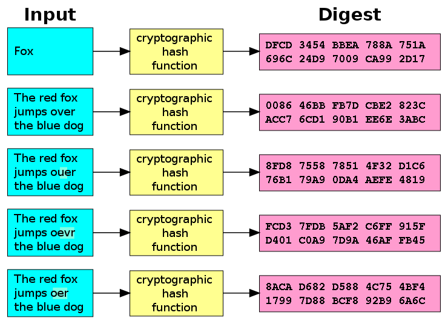

Maxim Kovalkov
We know about some; let's concentrate on:
We know about asymmetric cryptography, key exchange, etc... Hash functions are another ingredient we need to achieve those goals
A hash function is a function that maps strings of arbitrary length to strings of a fixed length n\mathbf nn
H:{0,1}{0,1}nH: \{0,1\}^{\color{#f66}*} \rarr \{0,1\}^{\color{#f66}n} H:{0,1}{0,1}n
In order to be generic the above definition works for strings of bits ...but mostly we care about bytes, so from now on feel free to think of character strings
The output is usually called the digest of the input string
To understand the technicalities, let's sort through some "non-useful" examples:
To see hashes that are actually widely used, let's define what are cryptographic hash functions.
They are members of a family of hash functions with these useful traits:

A collision occurs when a hash function HHH outputs the same digest for two different messages:
H(m)=H(m)withmmH(m) = H(m') \qquad \text{with } m \ne m' H(m)=H(m)withm=m
We say that HHH is collision resistant if there is no (1) explicit (2) efficient algorithm to find collisions for HHH
efficient: feasible to execute in terms of time complexity
explicit: allows for finding multiple different collisions
...in mathematical terms: the collision search algorithm C(m,t)C(m, t)C(m,t) is dependent on some parameter ttt so that you can run the same algorithm to produce different messages: like c1=C(m,1),c2=C(m,2)c_1 = C(m, 1), c_2 = C(m, 2)\dotsc1=C(m,1),c2=C(m,2)
...then you have c1c2cic_1 \ne c_2 \ne \cdots \ne c_ic1=c2==ci while H(c1)=H(c2)==H(m)H(c_1)=H(c_2)=\cdots=H(m)H(c1)=H(c2)==H(m)
Now let's focus on how to find collisions.
How many people do we need to put in a room to guarantee that there's at least two that share the same birthday?
Yep, 367 is correct. (nope, leap years are not the point)
How many people should there be in a room to have an expected probability of 50% of finding at least two with the same birthday?
About half of the previous number? More than 183? (how much more?) Less than 183? (how much less?)
The answer: only 23!
This is the so-called birthday paradox
General attack against an nnn-bit hash function HHH to find collisions
Similar to the birthday problem, we would need 2n2^n2n attempts to guarantee a collision, ...but only 1.22n/21.2 \cdot 2^{n/2}1.22n/2 are enough for a probability of success of 50%+
The expected amount of iterations of the above algorithm is slightly above 2
So the birthday attack has a runtime of O(2n/2)O(2^{n/2})O(2n/2)
A veeery nice online resource: basic to advanced explanations & exploitation techniques!
A compression function takes two xxx-bit strings and outputs one new xxx-bit string
f:{0,1}x{0,1}x{0,1}xf(A,B)C f: \{0,1\}^x \times \:\{0,1\}^x \rarr \{0,1\}^x \\ f(A, B) \mapsto Cf:{0,1}x{0,1}x{0,1}xf(A,B)C
How to obtain a hash function from an xxx-bit compression function
What Merkle & Damgrd proved is that if the compression function is collision-resistant, then the whole hash is collision-resistant.
Now it is enough to find a good compression function!
A popular way of building compression functions, using building blocks we know!
Hi+1=E(key=mi,pt=Hi)HiH_{i+1} = E({}_{key=}m_i, {}_{pt=}H_i) \oplus H_i Hi+1=E(key=mi,pt=Hi)Hi
Other variants of the construction are possible ...e.g. Miyaguchi and Preneel proposed 12 different and secure variants
Based on the above M.-D. paradigm; designed in 1991 by Ronald Rivest
A standard similar to DES and AES. (all hail NSA)
The Secure Hash Algorithm standard is a suite of 3 hash function families:
Based on Merkle-Damgrd like MD5, introduced in 1995.
Widely used in standard protocols, like TLS, SSL, PGP, SSH. Also used by versioning systems like git & Mercurial
SHA-2 is a set of cryptographic hash functions designed by National Security Agency in 2001 and published by the NIST
The 6 hash functions mentioned before allow for 4 different output lengths:
Let's come back to the utility of hash functions:
Easy: send the message MMM together with the digest H(M)H(M)H(M)
How do websites (or any service at all) store passwords?
Just taking the user's password and shoving into a database column is a BAD IDEA
Good cryptographic hash functions approximate a "true random oracle" (despite some flaws and gotchas!)
In order to guarantee both integrity and authentication:
A Message Authentication Code (MAC) is a pair of functions, Sign and Verify, such that:
With hash functions we can reach integrity but not authentication With MACs we can reach both integrity and authentication
A MAC can be subject to several types of attacks by external attackers who do not know the key
In this section we introduce two implementations of a secure MAC
Both constructions need:
Without the last encryption block we can perform a so called 1-chosen message attack
CBC-MAC is usually used with AES:
NMAC is not used with AES:
We want to build a MAC using Hash functions.
First idea:
Issues?
This is vulnerable to a length extension attack.
We can forge MACs for new messages:
We now explain a popular strategy, called HMAC (hash message authentication code)
Ingredients:
HMAC can be used to verify both integrity and authentication of a message, at the same time.
Any available hash function can be used, like SHA-1 or SHA-2, without having to modify the scheme.
The resulting version of the MAC is called HMAC-X, where X is the used hash function.
We define HMAC as:
HMACk(m)=H((kopad)H((kipad)m)){\sf HMAC}_k(m) = H\left((k\oplus opad) || H\left((k\oplus ipad)||m\right)\right) HMACk(m)=H((kopad)H((kipad)m))
Note:
We know Integrity, we know Authentication...
Another desirable property is non-repudiation:
Informally: a digital signature is like a MAC, but with public key cryptography:
No need for a shared secret key!
Pros of digital signatures
Cons of digital signatures
In practice, a digital signature is a pair of functions, Sign and Verify, such that:
Hashes help avoid the times when messages are either too short or too long!
We already talked about this veeery briefly: The RSA encryption and decryption keys can be switched around for use with digital signatures!
Some signatures are independent from the value of d:
Avoid them!!!
Using the homomorphic properties of RSA, we can sign an arbitrary message M without asking directly to the oracle to sign it:
DSA is based on 4 algorithms:
Each user generates a key as follows:
A signature of a message is made as follows:
Given a signature (r,s)(r, s)(r,s) and a message mmm, the verification is made as follows:
The main problem for DSA stems from the choice of the nonce kkk
Suppose to have two messages m1,m2m_1, m_2m1,m2 signed by the same user with the same nonce kkk
Let's call the signatures (r1,s1)(r_1, s_1)(r1,s1) and (r2,s2)(r_2, s_2)(r2,s2)
We can simply recover the private key xxx as follow:
x=(s2H(m1)s1H(m2))(r2s1r1s2)1modqx = \left(s_2 H(m_1) - s_1 H(m_2)\right)(r_2s_1 - r_1s_2)^{-1} \mod q x=(s2H(m1)s1H(m2))(r2s1r1s2)1modq
A Random Number Generator (RNG) is a utility or device that produces a sequence of numbers within some interval [min, max] while guaranteeing that values appear unpredictable (Randomness can have multiple meanings, but we won't go into this)
[min, max]
A Pseudo-Random Number Generator (PRNG) is an algorithm or hardware device that generates a sequence of random bits / numbers
Not every RNG needs to be cryptographically secure!
Most of them are designed to work well for simulations PRNGs are generally not cryptographically secure However, researchers have tackled this problem: Cryptographically Secure PRNGs (CSPRNG) have since been designed
The types of PRNG that we will consider:
Attacks consist in observing the generated numbers (to then predict the next numbers in the sequence) Knowing internals of the PRNG algorithm can help break it
Simplest known PRNG!
Three parameters: n,a,bn, a, bn,a,b called modulus, multiplier and increment respectively The seed is taking as the starting value x0x_0x0
Every next value is produced as:
xi+1=(axi+b)modnx_{i+1} = (a x_i + b) \mod n xi+1=(axi+b)modn
LCGs can be easily broken: it is enough to take some observations
Let's entertain different scenarios of "increasing difficulty":
In all these scenarios, we may have access to observations x1,x2,,xkx_1, x_2, \dots, x_kx1,x2,,xk, and we want to predict xk+1x_{k+1}xk+1
xk=(axk1+b)modnb=(xkaxk1)modn \begin{align*}x_k& = (ax_{k-1} + b) &{\rm mod\ } n \\ \Rarr\ \ b& = (x_k - a x_{k-1}) &{\rm mod\ } n\end{align*} xkb=(axk1+b)=(xkaxk1)modnmodn
Only nnn is known
We require observations xk2,xk1,xkx_{k-2}, x_{k-1}, x_kxk2,xk1,xk
To break:
{xk=axk1+b(modn)xk1=axk2+b(modn)xkxk1=a(xk1xk2){\begin{cases}\begin{align*}x_k = ax_{k-1} + b \pmod n\\ x_{k-1} = ax_{k-2} + b \pmod n\end{align*}\end{cases} \over x_k - x_{k-1} = a(x_{k-1} - x_{k-2})} \\[3pt] xkxk1=a(xk1xk2){xk=axk1+b(modn)xk1=axk2+b(modn)
a=(xkxk1)(xk1xk2)1(modn)a = (x_k - x_{k-1})(x_{k-1} - x_{k-2})^{-1} \pmod n a=(xkxk1)(xk1xk2)1(modn)
xkaxk1+b(modn)sk=xk(axk1+b)xk1axk2+b(modn)sk1=xk1(axk2+b) \begin{align*} x_k &\equiv ax_{k-1} + b \pmod n &\qquad s_k &= x_k - (ax_{k-1} + b)\\ x_{k-1} &\equiv ax_{k-2} + b \pmod n &\qquad s_{k-1} &= x_{k-1} - (ax_{k-2} + b)\\ &\ \ \vdots& &\ \ \vdots \end{align*} xkxk1axk1+b(modn)axk2+b(modn)sksk1=xk(axk1+b)=xk1(axk2+b)
Another famous PRNG is the Mersenne Twister (MT)
Untwister is a seed recovery tool for common PRNGs
Supported RNGs include:
rand()
php_mt_rand
DEFAULT::rand()
Random
LFSRs are used as PRNG with application for example in stream ciphers
A LFSR is defined by:
Assume that the characteristic polynomial of a nnn-bit LFSR is known
It is possible to completely recover the internal state given a binary output sequence of length nnn
With the internal state it is possible to go backward and forward and recover all the output sequence
Given some binary observation of a LFSR is it possible to recover its characteristic polynomial
https://mathworld.wolfram.com/Berlekamp-MasseyAlgorithm.html
An online calculator of Berlekamp-Massey Algorithm: http://bma.bozhu.me
CyberChallenge.IT 2023 Cryptography 3 Maxim Kovalkov